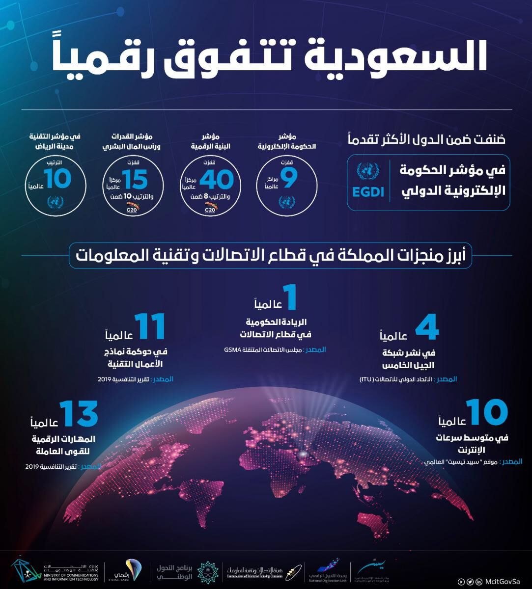
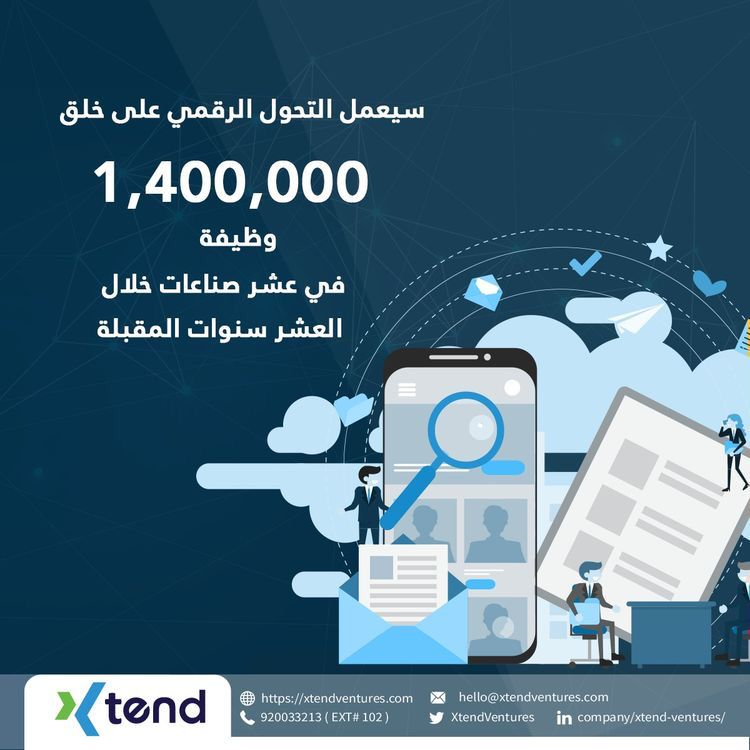
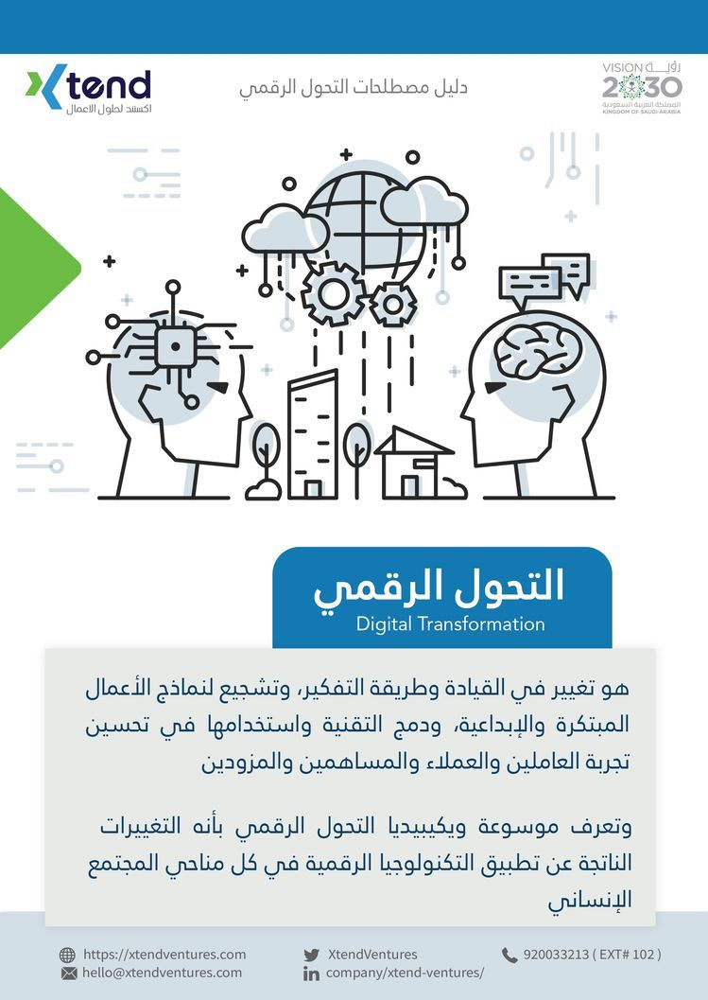
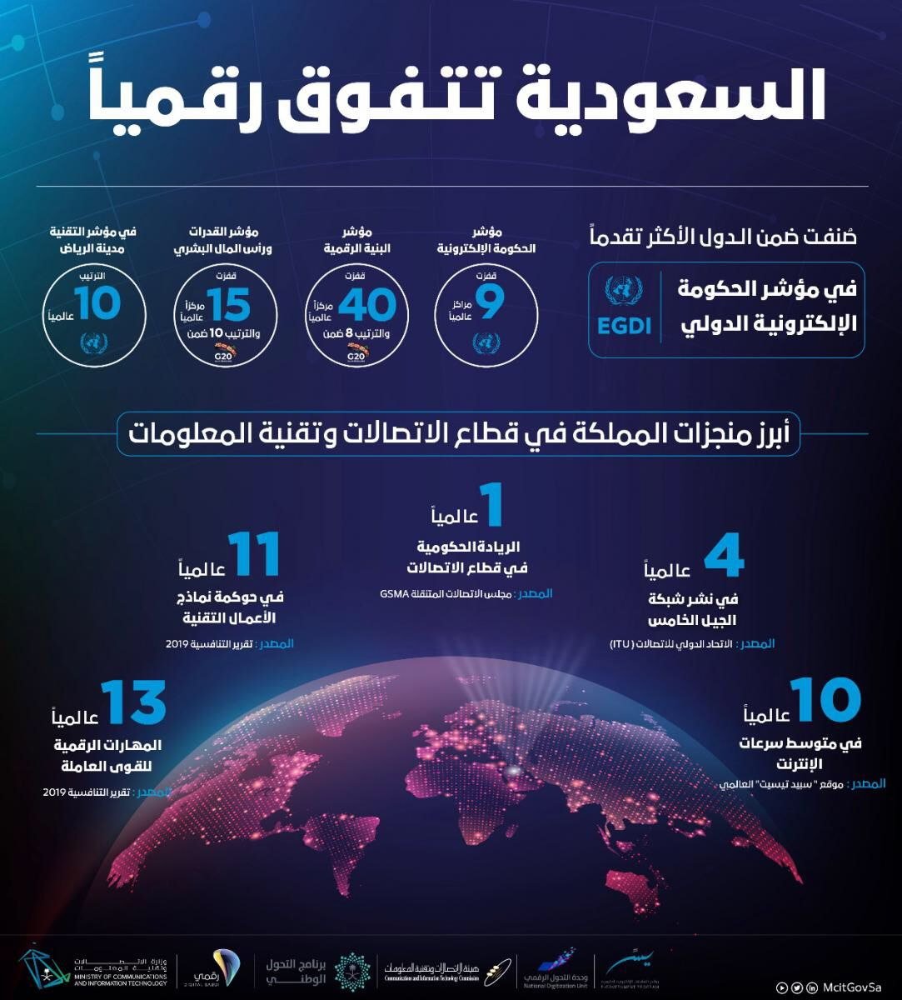
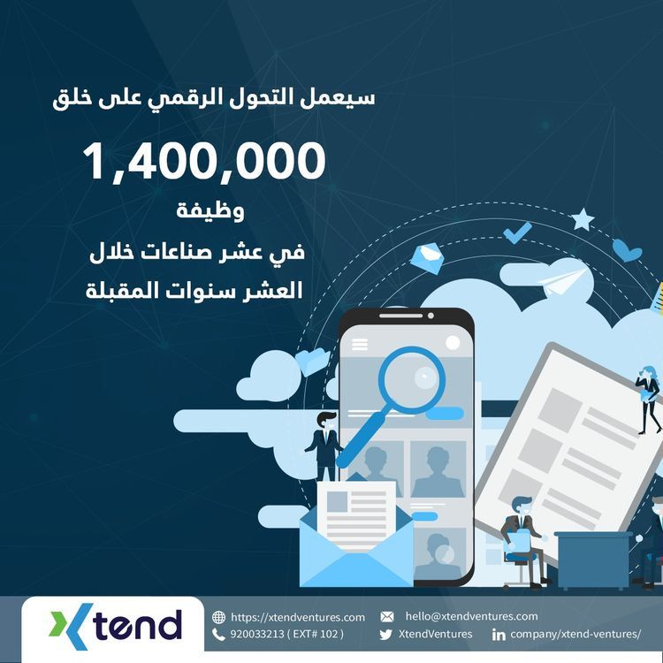
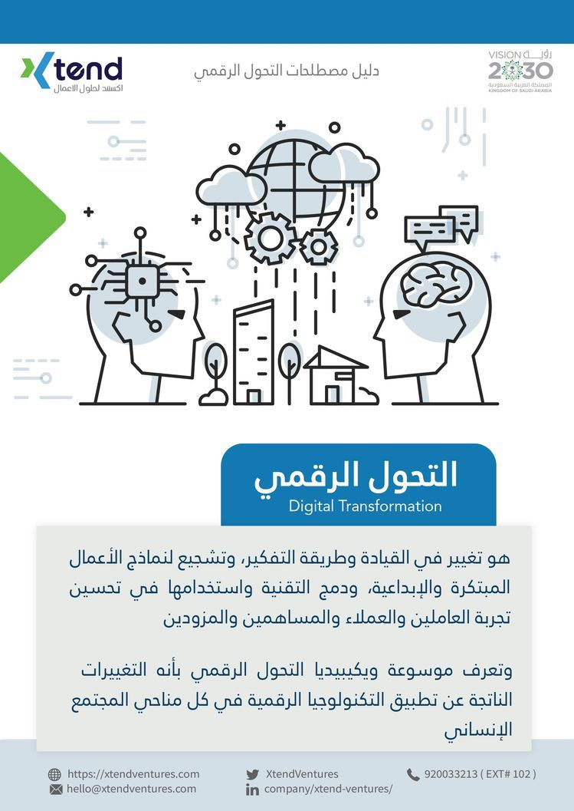
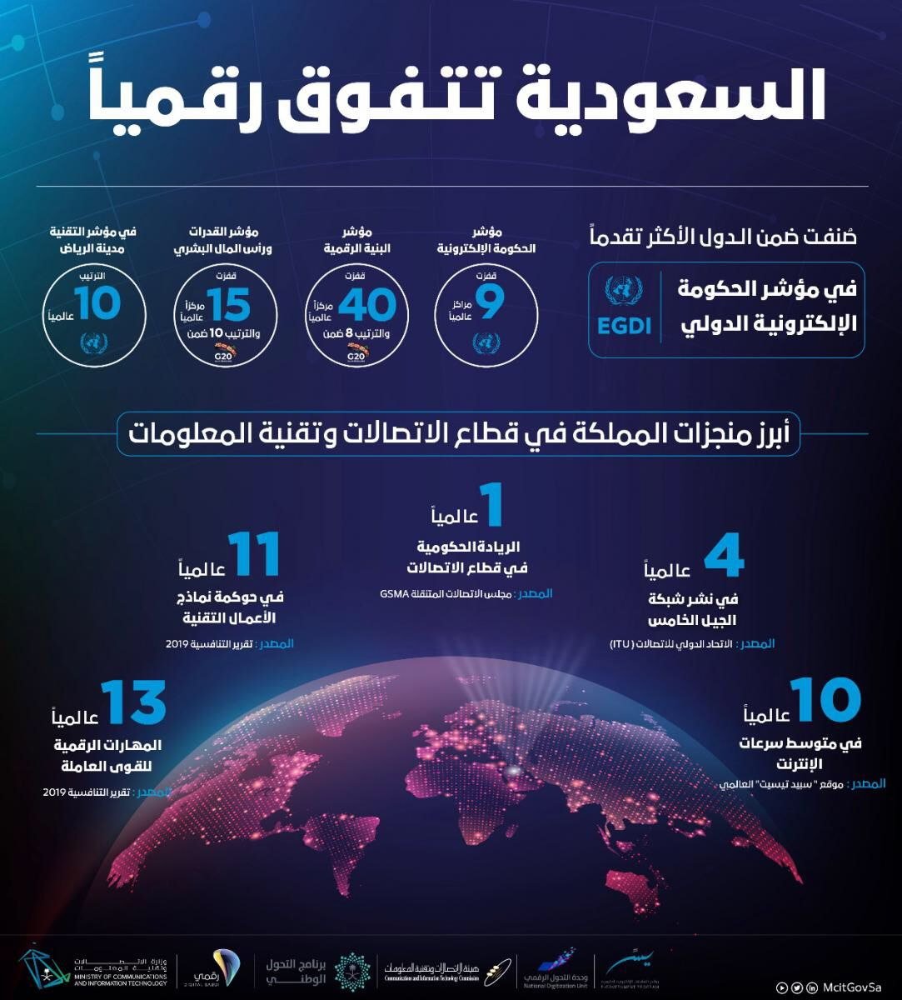
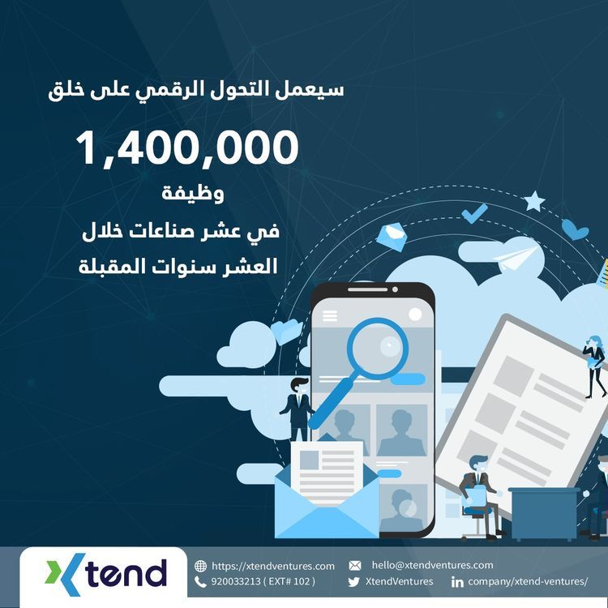
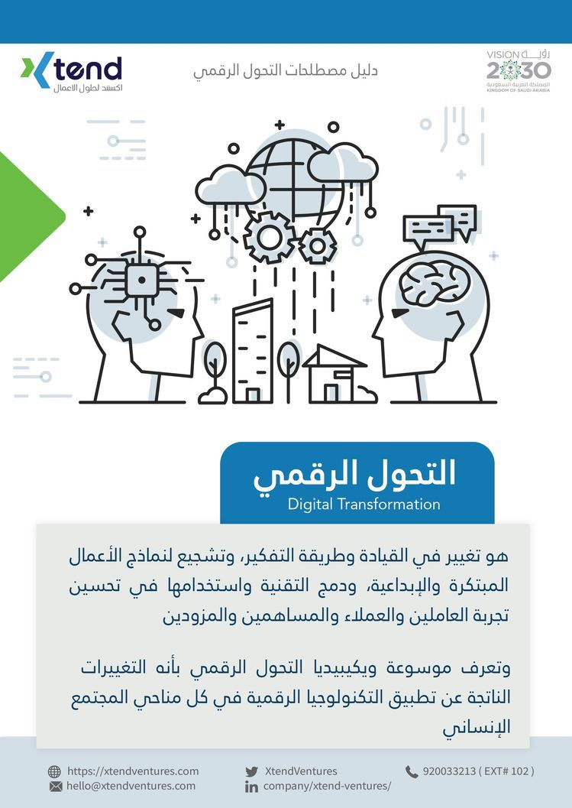

تلميح
 





مذكرات مبرمجة
!معقول للحين ما فهمتوا وش اللمح لة؟
طيب لو اقولكم تخصص عندة جنون العظمةاكثر من الطب والهندسة؟ ناس مدمنين قهوة وفلسفه؟ نعشق التويتر والكمامات؟
اي بالله انا اتكلم عن اكثر التخصصات طلبا اتكلم عن المستقبل اتكلم عن التطور والتكنلوجيا
?قد بحثتوا عن اكثر التخصصات طلبا في السعوديه طيب تدرون محمد بن سلمان تكلم عننا؟
تلميح



زي ما شفتوا وزي ما تعرفون ان رؤية 2030 تهتم بشكل كبير بالتقنية وان مستقبلة كبير وواعد في السعودية طيب بشرح لكم بشكل مختصر وش الحاسب ووش تخصصاتة خل قهوتك جاهزة وقول بسم الله